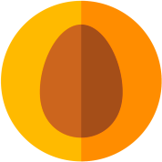
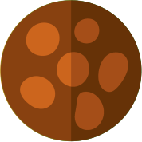

grass

water

fire
poison
flying

bug

normal
dark
dragon

electric

fairy

fighting

ghost

ground

ice

psychic

rock

steel
N. 801

magearna
- steel

- fairy

N. 802

marshadow
- fighting

- ghost

N. 803

poipole
- poison

N. 804

naganadel
- poison
- dragon

N. 805

stakataka
- rock

- steel
N. 806

blacephalon
- fire

- ghost
N. 807

zeraora
- electric

N. 808

meltan
- steel
N. 809

melmetal
- steel
N. 810

grookey
- grass

N. 811

thwackey
- grass
N. 812

rillaboom
- grass
N. 813

scorbunny
- fire
N. 814

raboot
- fire
N. 815

cinderace
- fire
N. 816

sobble
- water

N. 817

drizzile
- water
N. 818

inteleon
- water
N. 819

skwovet
- normal

N. 820

greedent
- normal

41